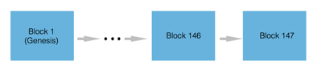
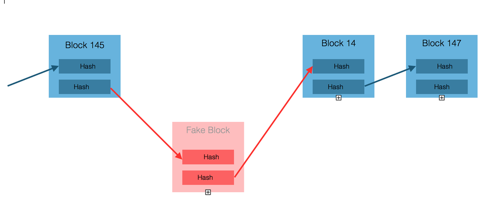

22.08.2017
What is Blockchain?

Eman Rayyan

Whenever I discuss the blockchain technology, I usually begin my narrative with Bitcoin. The reason for that is quite simple: everybody is familiar with the term Bitcoin to some degree or other. GReAT experts have told the team all there is to know about this famous crypto currency, and some of us even tried mining for Bitcoin blocks when this project first started. Put simply, Bitcoin is a technology for transferring value from one party to another bearing in mind that both parties do not trust each other a priori. Bitcoin operates on the basis of a distributed database of transactions — the so-called blockchain. In even simpler terms, a blockchain is a set of protocols and technologies for distributed storage of transaction data, while Bitcoin is a crypto currency that utilizes such properties of blockchains as decentralization and anonymity to achieve greater stability and earn more trust from users. The blockchain is structured in a way that network participants automatically reach a consensus on the contents of the blockchain records, while guaranteeing the invariability of records and the overall network security. Let me illustrate this using an example: suppose you need to transfer funds using a blockchain protocol. Transactions happen among a certain number of network participants among whom trust is not required. There is also no need for the involvement of a particular centralized trusted authority (such as a bank) that would guarantee the validity of transactions.
How does it work?
It would seem like an absurd and impossible situation, since all participants in this type of commercial process want to be certain that an exchange of items of value has taken place in one way or another. So how can a consensus be reached in a distributed network where participants do not trust one another? The secret is quite simple: a blockchain is not merely a technical implementation of the transaction transfer protocol; rather, it is a kind of ecosystem at the juncture of technologies and economic principles. In other words, a blockchain loses a number of its properties in the absence of economic principles. For starters, let us begin by looking at the blockchain structure from a technical perspective.

These blocks and their chain are generated according to specific rules and synchronized among all network participants.
In turn, each block consists of a header and a list of transactions. The block header in turn includes: its own hash, the hash of the previous block, the hash of transactions, and additional service information.
The hash of any block consists of the hash of transactions. As a result, all information about the completed transmission of data is stored, and it cannot be spoofed without replacing the entire block. In this way a block becomes a kind of container for a set of transactions. Meanwhile, the presence of the hash of the previous block allows arranging blocks into a chain and provides protection against block spoofing. It is a quite reliable algorithm, isn't it?

Let us look at the rules according to which a block is generated. This is where magic begins, making the blockchain resistant against hacking by the transaction recording and transmission system. Here are a few essential principles that guarantee a transparent and decentralized network:
All network users have access to the complete copy of the blockchain and store (or have the capability to store it) on their systems;
Any network user can generate blocks;
Users are rewarded financially for generating blocks;
A computing problem has to be solved to generate a block;
Now let us examine this in more detail. The first and second items on the list are more or less clear. I should only mention that storing the entire database copy is not obligatory in modern versions of blockchains. Regarding the third item: users are rewarded for generating a block, which creates an economic incentive to attract additional users who will generate new blocks. This process of creating blocks is known as mining and the person creating them is called a miner. We will come across this term many times subsequently.
The fourth item is the most interesting of them all. What kind of computing problem is that? This is where the Proof of Work principle comes into play. Incidentally, it deserves a whole separate chapter.
The problem can vary depending on the blockchain implementation. As a general rule, it involves computing a certain hash in a way that allows solving the problem only using the brute force method.
Proof of Work (PoW)
As I mentioned at the very outset, blockchains are associated with the circulation of crypto currency in one way or another. Since Bitcoin is the most popular crypto currency, let us examine the operating principle of the blockchain as exemplified by this currency. Imagine that you have a set of transactions that are not yet included in the blockchain but are only candidates for inclusion. Miners receive these transactions and enter a competition of sorts for who can generate a specific block sooner than others and receive a reward. As I mentioned earlier, generating a block requires solving a certain computing problem. The problem involves generating a hash (the SHA-256 function). It should not be just any kind of hash; its numerical value has to be less than a certain number N. The result of SHA-256 is unpredictable, which is why the right hash can be chosen only using a brute force search. This usually requires a large number of recalculations that use up CPU/GPU resources of the mining computer. Once the block hash satisfying the rules has been found, the miner generates a block and sends it to other network participants for verification. If the block has been generated correctly, it is included in the chain and the miner receives a reward. Note that the rate at which blocks are generated does not change despite the growing network capacity (number of participants). The speed is balanced by complicating or simplifying the computing problem (by increasing or reducing the number N).
After reading all this, you probably ask yourself the perfectly natural question: Why is all this needed?
The answer is quite simple: for network security. After all, the network has certain inherent problems and threats that are neutralized in the blockchain. I am totally serious! The network is distributed, and sometimes a parallel branch of blocks can form because miners were either unaware of one another or acted wrongfully on purpose (e.g., to perform the transaction in one chain and then spoof it in another). How should the only valid branch be selected? A rule applies whereby the main branch is the one where more CPU/GPU resources have been expended on generating this branch, i.e. essentially the branch containing more blocks. So if a miner starts a separate branch of blocks with its own history of transactions (either accidentally or intentionally), this branch will be declared dead sooner or later and discarded by the network. Transactions in this branch are canceled.
A separate branch (the lilac branch in the figure below) can become the main branch only if it is longer than the main branch (black); this can happen if more CPU/GPU resources are expended on generating the lilac branch compared to the black branch. This is in turn possible when somebody controls 51% of the network's computing power.
In addition to this threat of the blockchain branching off, there are also other threats, but I think they should be covered in a separate article to avoid overloading the reader with information.
The economics of the process are the most interesting aspect of this technology.
The network owes its security in many ways to the economic incentives embedded in the protocol. Let us examine the main questions that you may have and answer them right away. So:
Why are users willing to expend their computing power on mining?
They are rewarded for successful mining.
When the number of miners decreases, the probability of successful generation of a block increases, which raises the probability of a reward, which in turn attracts new miners. This makes the network a self-regulating organism.
The reward for miners should be understood as a collective payment for network security and operation. Depending on the blockchain implementation, the reward is either accrued by the protocol (by generating new “coins”) or provided as a per-transaction fee, or both.
A miner is interested in successful mining. To generate a block, the miner needs a copy of the blockchain all the way to the last block, which creates an incentive for the soonest possible network synchronization.
The miner receives a reward only for a block generated in the main and only blockchain branch. When the miner expends resources on mining in a parallel branch, this miner is wasting resources, which stimulates miners to work in the main branch.
What if somebody secures 51% of network power?
The probability of this scenario does not equal zero. What's more, there used to be a mining pool close to this situation, and this pool voluntarily scaled down its power to avoid crossing this threshold. Why? Because this pool has already invested heavily in the mining infrastructure and risked undermining trust in the network and thereby reducing the value of its investments to naught